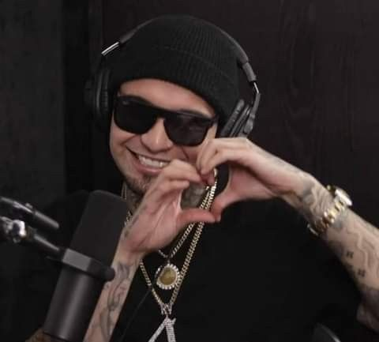

El rapero mexicano Gera MX, cuyo nombre real es Gerardo Daniel Torres Montante, es un destacado exponente de la escena del rap en México. Nacido el 14 de octubre de 1994 en San Luis Potosí, se ha ganado un lugar en la industria de la música por su estilo único y sus líricas que suelen reflejar vivencias personales y problemas sociales.
Premio Lo Nuestro 2022: Ganó en la categoría "Colaboración del Año – Regional Mexicano" por su éxito "Botella Tras Botella" junto a Christian Nodal. Discos de Platino: "Botella Tras Botella" recibió múltiples certificaciones, incluyendo Doble Platino en México (más de 80,000 copias vendidas) y Platino en Centroamérica. Billboard Hot 100: Se convirtió en el primer rapero mexicano en ingresar a esta lista con "Botella Tras Botella".
Gera MX se destaca por un estilo auténtico y emocional, con letras que abordan la vida real, el amor, la calle y la superación. Su voz rasposa y su narrativa personal lo hacen único en el rap mexicano. Ha fusionado el rap con géneros como el trap y el regional mexicano, logrando éxitos como “Botella Tras Botella”. Como pionero del rap en el mainstream, ha inspirado a nuevas generaciones y creado el sello Rich Vagos, impulsando a talentos emergentes. Su legado es el de un artista que rompió barreras sin perder su esencia, dejando una marca en la música urbana latinoamericana.
Gera MX ha sido una figura clave en la evolución del rap en México. Su música ha influido en toda una generación de jóvenes artistas urbanos, combinando estilos como el boombap, el trap y el regional mexicano. Ha logrado que el rap mexicano gane respeto a nivel internacional, abriendo puertas para colaboraciones entre géneros y demostrando que se puede mantener autenticidad y llegar al éxito comercial.
Gera MX tiene una fuerte presencia en plataformas como Instagram, YouTube y TikTok, donde conecta directamente con sus seguidores. Canciones como “Botella Tras Botella” se viralizaron rápidamente, convirtiéndose en tendencias globales. Su contenido, tanto musical como personal, le ha permitido construir una comunidad sólida y leal, reforzando su influencia más allá de la música.
Gera MX comenzó con un estilo de rap tradicional, centrado en letras personales y crudas. Con el tiempo, su música evolucionó hacia sonidos más diversos, incorporando trap, boombap y hasta regional mexicano. Esta versatilidad le permitió llegar a nuevas audiencias sin perder su esencia, destacando su capacidad de adaptación y crecimiento artístico.
Gera MX continúa activo en la escena musical. Recientemente, anunció en redes sociales el próximo lanzamiento de un nuevo EP, generando expectación entre sus seguidores, aunque aún no revela detalles específicos . Además, su colaboración con Alemán en el proyecto Rich Mafia ha sido bien recibida, y se espera que continúen trabajando juntos en futuras producciones .